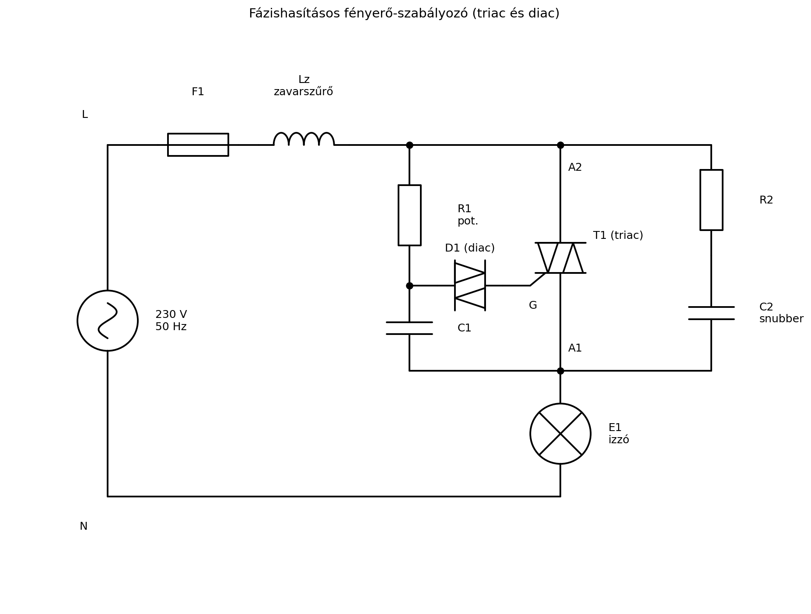

A villamos hajtások és fogyasztók korszerű szabályozásában nem elég a mechanikus kapcsoló vagy a hagyományos mágneskapcsoló: a motor fordulatszámát fokozatmentesen kell változtatni, a fűtést zajtalanul kell szabályozni, vagy egy lámpa fényerejét kell finoman állítani. Egy 5,5 kW-os szellőzőmotornál vagy egy 2 kW-os izzószálnál nem használhatunk egyszerű ellenállásos fokozatkapcsolót, mert az óriási hőt termel, és nem szabályozható finoman. Az erősáramú félvezetők – a tirisztor, a triac, a MOSFET és az IGBT – elektronikus kapcsolóként másodpercenként akár ezerszer vagy százezerszer is képesek ki- és bekapcsolni a terhelést, miközben a vezérlésükhöz csak nagyon kis teljesítmény szükséges. Szerelőként ezeket az elemeket nem feltétlenül forrasztjuk, hanem kész készülékekben – lágyindítóban, frekvenciaváltóban, fényerő-szabályozóban, szilárdtestrelében – találkozunk velük, és a bekötésükhöz, paraméterezésükhöz, valamint a hibakereséshez értenünk kell a működésüket.
Képzeljünk el egy hagyományos mágneskapcsolót: ha a tekercsére 24 V egyenfeszültséget adunk, a záróérintkezők mechanikusan összezáródnak, és a főáramkörben folyhat az áram. Ha a tekercs feszültségét megszüntetjük, a kapcsoló kinyit, és az áram megszakad. Az erősáramú félvezető kapcsoló ehhez hasonló, de nincs benne mozgó alkatrész: a kapcsolást a kristály belsejében lévő töltéshordozók vezérlik. A tirisztor olyan, mint egy reteszelő mágneskapcsoló, amely bekapcsolás után addig vezet, amíg a főáramkör áramát külsőleg meg nem szüntetik. A MOSFET és az IGBT ezzel szemben olyan, mint egy nagy frekvencián működő precíziós kapcsoló, amelynél a vezérlőelektródára (gate) adott feszültség határozza meg, hogy a főáramkör vezet-e.
A leggyakoribb erősáramú félvezetők működését a következő szakaszok ábrái mutatják (a tirisztor jelleggörbéje és a triacos fényerő-szabályozó rajza), katalógusadataikat a „Jelleggörbék és katalógusadatok” szakasz foglalja össze: a tirisztor és a triac hálózati frekvencián (50 Hz) kapcsol, az IGBT és a MOSFET pedig nagyfrekvenciás, impulzusszélesség-modulált (PWM) jelekkel.
A tirisztor (Silicon Controlled Rectifier, SCR) egy négyrétegű, p-n-p-n szerkezetű, három kivezetésű félvezető eszköz. Kivezetései: anód (A), katód (K) és vezérlőelektróda (gate, G). A tirisztor a hagyományos diódától abban különbözik, hogy pozitív anód-katód feszültségnél sem vezet mindaddig, amíg a gate-re pozitív gyújtóimpulzust nem adunk. A begyújtás után a tirisztor reteszelődik (bekapcsolt állapotban marad), és a gate-áram megszűnése után is addig vezet, amíg a főáram az anód és a katód között a tartóáram (holding current, ) alá nem csökken. Gyakran használt hasonlat: a tirisztor úgy viselkedik, mint egy ajtó, amelyet a gate kinyit, de amelyet csak a másik oldalról lehet bezárni – az áram megszüntetésével.
A tirisztor jelleggörbéje a következő ábrán látható: a pozitív anód-katód irányban a gate-impulzus előtt a tirisztor nagy impedanciával rendelkezik (nyitóirányú zárási, ún. előre zárási szakasz), a begyújtás után pedig a nyitóirányú karakterisztika meredeken zuhan, és nagyon kis feszültségeséssel vezet. A negatív irányban a tirisztor mindig zár, hacsak a feszültség a letörési feszültséget meg nem haladja (ezt az üzemi tartományban elkerüljük).
Az ábra sematikus (nem katalógusadat): a harmadik síknegyedben a kis záróáram az feletti letörésig; az első síknegyedben az előre zárási szakasz, amelyről a tirisztor az átbillenési feszültségnél () a vezetési ágra ugrik – nagyobb gate-áramnál már kisebb anód–katód feszültségnél. A vezetési ágon kb. 1–1,5 V esik a tirisztoron, és az áram az tartóáram alá csökkenve oltja ki. A HTML-kiadásban a gate-áram csúszkával állítható, és látszik, hogyan mozdul az átbillenési pont.
A tirisztor kioltása váltakozó áramú hálózatban a természetes kommutációval történik: amikor a feszültség félhulláma nullához közelít, a tirisztor árama a tartóáram () alá csökken, és ha a gate-re többé nem adunk impulzust a következő félhullámban, a tirisztor lezár. Egyenáramú körben a kioltáshoz külön oltókört kell alkalmazni (kényszerkommutáció), ami bonyolultabbá teszi az alkalmazást – ezért a tirisztort elsősorban hálózati frekvenciájú, váltakozó áramú áramkörökben használjuk.
Definíció. A tirisztor olyan háromkivezetésű, négyrétegű félvezető kapcsolóelem, amely pozitív anód-katód feszültségnél gate-impulzus hatására begyújtható, begyújtás után reteszelődik, és csak a főáram tartóáram alá csökkenésével oltható ki.
Szabály. A tirisztor begyújtásához a gate és a katód közé pozitív feszültségimpulzust kell adni, legalább a kapcsolási időre. A begyújtás feltétele a pozitív anód-katód feszültség és a megfelelő gate-áram.
A triac (TRIode for Alternating Current) két antipárhuzamosan kötött tirisztor egyetlen kristályban. Két főkivezetése az A1 (vagy MT1) és az A2 (vagy MT2), valamint a gate (G). A triac a váltakozó áram mindkét félhullámában képes begyújtható lenni, ezért az AC-szabályozások – például fényerő-szabályozó (dimmer), fűtésszabályozó, egyfázisú motorfordulatszám-szabályozó – leggyakoribb eleme. A triac az A2 (MT2) és a gate polaritása szerint négy kvadránsban gyújtható. A négykvadránsos típusoknál a IV. kvadráns a legkevésbé érzékeny; a háromkvadránsos (snubber nélküli) típusok a IV. kvadránsban nem gyújthatók, ezért a vezérlést az I–II–III kvadránsra tervezzük (ellenőrizendő: adatlap).
A triac alkalmazása a fázishasításos szabályozásban a legjellemzőbb. A fázishasításos fényerő-szabályozó működése: az RC-kör fáziskésleltetést hoz létre, és amikor a diac (kétirányú triggerdióda) átütési feszültségét eléri, a triac gate-jére gyújtóimpulzust ad. Az izzó fényerejét a begyújtási szög () határozza meg: minél később gyújtjuk be a triacot a félhullámban, annál kevesebb időn keresztül folyik áram, és annál kisebb az átlagos teljesítmény.
Az alábbi kapcsolási rajz egy egyszerű fázishasításos fényerő-szabályozót mutat. A potenciométer (R) és a kondenzátor (C) időállandót ad, a diac pedig a triac gate-jét vezérli.

A rajzon a triac a fázisvezetőben (L) van, az F1 biztosító és az izzó között, sorosan az izzóval; az izzó másik kivezetése a nullavezetőre (N) csatlakozik. A triac tehát nem az izzó és az N közé kerül: a kapcsolót (a szabályozó elemet) mindig a fázisvezetőbe kötjük. Az R1 potenciométer és a C1 kondenzátor soros RC-tagja a triac A2 és A1 kivezetése közé kerül; a C1 feszültsége a diacon (D1) át a triac gate-jére jut. Az R2–C2 soros tag a triacot védő snubber.
Megjegyzés. A rajzon T1 a triac, D1 a diac
(kétirányú triggerdióda), Lz a zavarszűrő tekercs, az R2–C2
soros tag pedig a kapcsolási feszültségcsúcsokat csillapító snubber.
Szabály. A fázishasításos szabályozásnál a triacot a hálózati feszültség nullátmenetéhez képest szögben (, 0°–180°) gyújtjuk. Az növelésével a kimeneten megjelenő effektív feszültség csökken.
A MOSFET (Metal-Oxide-Semiconductor Field-Effect Transistor) olyan feszültségvezérelt, unipoláris tranzisztor, amelynél a gate és a source közé adott feszültség () nyitja vagy zárja a csatornát a drain és a source között. Mivel a gate szinte ideális szigetelő, a MOSFET gate-árama közel nulla, a kapcsolási sebessége pedig nagyon nagy – akár több százezer kapcsolás másodpercenként. Az erősáramú MOSFET-eknek azonban a nagy feszültségeknél viszonylag nagy a bekapcsolási (csatorna) ellenállása, ami nagy áramoknál jelentős vezetési veszteséget okoz.
Az IGBT (Insulated Gate Bipolar Transistor) egy hibrid elem: a vezérlése a MOSFET-hez hasonlóan feszültségvezérelt (gate-emitter, ), a kimeneti része viszont bipoláris tranzisztorhoz hasonló kollektor-emitter áramúttal dolgozik. Az IGBT a MOSFET-hez képest nagyobb feszültségen és nagyobb áramon kapcsolható, és a vezetési feszültségesése telítéskor () kisebb, viszont lassabb, mint a MOSFET. Ezért az IGBT a mai frekvenciaváltók, szünetmentes tápegységek és ipari inverterek alapvető kapcsolóeleme, a MOSFET pedig a gyors, kis és közepes teljesítményű tápegységekben, DC-DC átalakítókban és egyenáramú motorvezérlőkben gyakori.
Definíció. A MOSFET feszültségvezérelt, unipoláris félvezető kapcsoló, ahol a gate–source feszültség határozza meg a drain–source csatorna vezetését. Az IGBT feszültségvezérelt, bipoláris teljesítmény-félvezető, amely a MOSFET gyors vezérlését és a bipoláris tranzisztor nagy áramú kimenetét egyesíti.
A szerelő ezekkel az elemekkel különböző kivitelben találkozik. Az alábbi ábrán (a) egy TO-220 tokos tirisztor vagy triak látható: fém hűtőfül furattal (1) és három láb (2) – tirisztornál A, K, G, triaknál A1, A2, G, a sorrend az adatlap tokrajza szerint. A (b) csavaros tirisztor hatlapú menetes talpa (3) a hűtőbordába csavarva egyben főkapocs is, a fonott főkivezetés (4) kábelsaruval csatlakozik, a vékony vezetékek (5) a gate és a segédkatód. A (c) IGBT-modul (félhíd) rézalaplapja (6) szerelőfuratokkal kerül a hűtőbordára; a főáram a csavaros főkapcsokon (7), a vezérlés a vékony csapokon (8) halad, egyes modulokban hőmérséklet-érzékelő (NTC) is van (9).
A legfontosabb szerelési tanulság: a fém fül és a menetes talp általában valamelyik főkapoccsal azonos potenciálon van, ezért a hűtőborda feszültség alá kerülhet – ezt az adatlapból kell ellenőrizni (létezik szigetelt fülű és szigetelt alaplapú kivitel is). A vezérlőcsapokat (gate) ne érintsd feleslegesen, a statikus feltöltődés károsíthatja őket. A HTML-kiadásban az a–c gombbal egy-egy kivitel emelhető ki.
Az erősáramú félvezetők katalógusadatai a munkapont és a biztonságos üzem meghatározásához szükségesek. A főbb paraméterek:
Szabály. A katalógusadatokat mindig az aktuális gyártói adatlapokból kell kiolvasni, és a tervezésnél a legrosszabb üzemállapotra (maximális feszültség, maximális áram, maximális melegedés) kell méretezni. A határértékek túllépése a félvezető azonnali tönkremeneteléhez vezet.
A félvezető kapcsolóban kétféle veszteség keletkezik:
A teljes veszteség: . Az elem hatásos hűtését hűtőbordával és gyakran ventilátorral kell biztosítani. A hűtőborda méretezése a félvezető megengedett maximális réteghőmérséklete (jellemzően 150 °C a szilíciumnál, ellenőrizendő) és a környezeti hőmérséklet alapján történik. A gyakorlatban a hűtőborda méretét a gyártói diagramokból választjuk ki.
Szabály. Minden erősáramú félvezetőt a katalógusban megadott hőellenállás és maximális réteghőmérséklet figyelembevételével kell hűteni. A hűtőborda és a félvezető közé hővezető pasztát vagy szigetelő fóliát kell tenni, és a rögzítőcsavarokat az előírt nyomatékkal kell meghúzni. Ha a tok fém füle feszültség alatt van, és a borda más potenciálon (pl. földelt) van, a fém fület szigetelő lappal és szigetelő hüvellyel kell elválasztani; a szigetelő lap mellé – típusától függően – vékony pasztaréteg is kerülhet (gyártói adat szerint).
Az alábbi ábra (a) része egy TO-220 tokos félvezető szigetelt szerelését mutatja robbantva, a csavar tengelye mentén: 1 csavar, 2 alátét, 3 vállas szigetelő hüvely, 4 a félvezető fém füle, 5 szigetelő lap pasztával, 6 hűtőborda, 7 alátét és rugós alátét, 8 anya. Az alsó metszetek a helyes és a hibás szerelést vetik össze, a (c) rész pedig az ellenőrzést.
Paszta nélkül a felületek közti mikroszkopikus légrés nagy hőellenállást okoz, a túl vastag réteg pedig maga is rontja a hőátadást. A leggyakoribb súlyos hiba a hiányzó szigetelő hüvely: a csavar fémesen összeköti a fület a bordával, így a borda feszültség alá kerül. Ezért beépítés előtt, feszültségmentesen ohmmérővel ellenőrizd, hogy a fül és a borda között szakadás (OL) van. A HTML-kiadásban a helyes és a hibás metszetek egyenként léptethetők.
Szabvány. A félvezetők katalógusadatai és vizsgálati módszerei a nemzetközi IEC (MSZ EN) 60747 sorozatba tartoznak, amely a félvezető eszközök általános követelményeit rögzíti (ellenőrizendő: pontos szám és hatályos kiadás). A frekvenciaváltókra a termékszabvány az MSZ EN 61800 sorozat (villamos biztonság: -5-1, EMC: -3), a lágyindítókra és félvezetős kontaktorokra (SSR) az MSZ EN 60947-4-2, illetve -4-3; a gépek villamos berendezéseire az MSZ EN 60204-1 vonatkozik. A felharmonikus-kibocsátás határértékei: MSZ EN 61000-3-2 (legfeljebb 16 A fázisáramú készülékek) és MSZ EN 61000-3-12 (16 A felett, 75 A-ig) (ellenőrizendő: aktuális szabványkiadás és alkalmazási tartomány).
1. példa (B) – Fázishasításos teljesítményszabályozás
számítása.
Egy 230 V, 1 kW névleges teljesítményű izzószálas fűtőbetétet
fázishasításos triackal szabályozunk. A begyújtási szög
.
Becsüljük meg a kimeneti feszültség effektív értékét és a betét
tényleges teljesítményét, ha a fűtőbetét ellenállása állandó!
Megoldás.
A fázishasításos, teljes hullámú szabályozásnál a kimeneti effektív
feszültség ohmos terhelésnél pontosan:
Itt
és
.
Behelyettesítve:
A betét ellenállása névlegesen:
.
A teljesítmény:
.
(A valós érték kissé eltér: a triacon kb. 1 V esik, és az izzószál
ellenállása a hőmérséklettel változik.)
2. példa (C) – IGBT teljesítményveszteség és
hűtőborda.
Egy frekvenciaváltó kimeneti fokozatában egy IGBT félvezető
áramot kapcsol,
telítési feszültséggel. A kapcsolási frekvencia
,
a be- és kikapcsolási energia összege
.
A kitöltési tényező
.
Számítsuk ki a vezetési, a kapcsolási és a teljes veszteséget, majd
becsüljük meg a szükséges hűtőborda hőellenállását, ha a megengedett
félvezető-réteghőmérséklet
,
a környezeti hőmérséklet
,
és a félvezető saját hőellenállása
!
Megoldás.
A vezetési veszteség a kitöltési tényezővel súlyozva:
A kapcsolási veszteség:
A teljes veszteség:
A maximális hőmérséklet-különbség a réteg és a környezet között:
A teljes megengedett hőellenállás:
A hűtőborda és a félvezető közötti termikus ellenállás jellemzően
–
(ellenőrizendő: gyártói adat). Tegyük fel, hogy a tok és a hűtőborda
közötti hővezető réteg (paszta vagy szigetelőfólia) hőellenállása
.
Ekkor a hűtőborda maximális hőellenállása:
Tehát olyan hűtőbordát kell választani, amelynek a hőellenállása
legfeljebb
.
Eset. Egy 7,5 kW-os háromfázisú szellőzőmotor közvetlen indításakor a védőkapcsoló időnként leoldott, és a mechanikus hajtás kardáncsuklója erősen kopott. A karbantartó villanyszerelő a direktkapcsolást egy háromfázisú lágyindítóra cserélte. A lágyindító minden fázisban két antipárhuzamos tirisztort tartalmazott, így a motor feszültségét a begyújtási szög fokozatos csökkentésével 0-ról a névleges értékre emelte. Az indítási áramlökés körülbelül a felére csökkent, a mechanikai rántás megszűnt, a hálózati feszültségletörés indításkor kisebb lett. Felfutás után az áthidaló mágneskapcsoló zár, a motor üzemi fogyasztása nem változott (a lágyindító nem energiatakarékossági eszköz, csak az indítást szelídíti). A szerelőnek a bekötés során figyelnie kellett a tirisztoros modul hűtőbordájára, a gyártó által előírt kábelezésre, valamint arra, hogy a vezérlőjelet vivő törpefeszültségű (például 24 V-os) jelkábelt ne vezesse a motor tápkábelével azonos kötegben, mert a felharmonikusok zavart okozhatnak a vezérlésben.
Tanulság. Az erősáramú félvezetős készülékek beüzemelésekor a készülék kapcsolási rajzát, a gyártói táp- és vezérlőkábel-ajánlást, valamint a szellőzést, hűtést mindig ellenőrizni kell, mert a tirisztoros/IGBT-s teljesítményfokozat melegedése és az elektromágneses zavarás sokkal jelentősebb, mint egy mágneskapcsolónál.
1. feladat (A). Sorold fel a tirisztor három kivezetését, és magyarázd el, mi a feltétele a begyújtásnak és a kioltásnak!
2. feladat (A). Mi a lényegi különbség a triac és a tirisztor között az áramvezetés irányát tekintve?
3. feladat (B). Egy fázishasításos fényerő-szabályozó hálózatról üzemel. A begyújtási szög . Számítsd ki a terhelésen megjelenő effektív feszültséget a fenti képlettel, és hasonlítsd össze a teljes hullámú, -os értékekkel!
4. feladat (B). Egy frekvenciaváltó IGBT fokozatában , , a kitöltési tényező , a kapcsolási frekvencia , a kapcsolási energia összege . Számítsd ki a vezetési, a kapcsolási és a teljes veszteséget!
5. feladat (C). Miért használnak egy modern, 90 kW-os ipari ventilátor fordulatszám-szabályozásához inkább IGBT-s frekvenciaváltót, mint tirisztoros fázishasításos szabályozót? Foglald össze a működési elv és a hálózati visszahatás szempontjából!
6. feladat (D). Egy villanyszerelő egy egyfázisú fűtőbetétet szilárdtestrelével (SSR) akar szabályozni. A relé kimenetén kikapcsolt állapotban 3 mA szivárgó áramot mér. A fűtőbetét 230 V, 500 W (R ≈ 106 Ω). Számítsd ki a kikapcsolt állapotban a betéten disszipálódó szivárgási teljesítményt, és indokold, miért kell a szerelőnek leválasztó kapcsolót (szakaszolót, megszakítót) is beiktatnia a karbantartáshoz!
Önellenőrzés – válaszok
Feladatok – válaszok
1. feladat. Anód (A), katód (K), gate (G). A begyújtás feltétele a pozitív anód-katód feszültség és a gate-re adott pozitív gyújtóimpulzus. A kioltás feltétele az anódáram tartóáram alá csökkenése.
2. feladat. A tirisztor csak pozitív anód-katód irányban vezet, a triac mindkét irányban, tehát a váltakozó áram mindkét félhullámában képes vezetni.
3. feladat.
,
.
-nál:
,
tehát
.
A 90°-os begyújtásnál a terhelés effektív feszültsége a névleges
70,7%-a.
4. feladat.
5. feladat.
A tirisztoros fázishasításos szabályozás a hálózati frekvencián (50 Hz)
kapcsol, ezért a kimeneti feszültség hullámalakja erősen torz, sok
alacsony frekvenciás felharmonikust termel, ami hálózati visszahatást,
motorzúgást, rezgést és többletveszteséget okoz. A fázishasításos
szabályozás ráadásul csak a feszültség csökkentésére alkalmas, a
frekvencia állandó marad. Az IGBT-s frekvenciaváltó ezzel szemben a
feszültséget és a frekvenciát együtt változtatja (U/f szabályozás), a
kimeneti jel PWM-szinuszos, így a motor nyomatéka jobb, a hálózati
felharmonikusok kisebbek, és a fordulatszám széles tartományban,
folyamatosan szabályozható.
6. feladat.
A szivárgó áram:
.
A betét szivárgási teljesítménye:
Ez a teljesítmény önmagában nem melegíti számottevően a betétet, viszont
a kikapcsolt állapotban a betét kivezetésein megjelenő feszültség:
(Az SSR tényleges szivárgási teljesítménye ennél nagyobb is lehet, mert
a triac záróárama feszültségfüggő.) A szivárgó áram miatt a fogyasztó
kapcsai soha nem tekinthetők feszültségmentesnek: lekötött terhelésnél
az SSR kimenete a szivárgóáram miatt közel a teljes hálózati
feszültségre (≈ 230 V a nullához képest) „feltöltődhet”, a félvezető nem
biztosít galvanikus leválasztást, és zárlatosra is meghibásodhat. Ezért
a karbantartáshoz a félvezető relé elé mindig be kell iktatni egy
mechanikus leválasztó kapcsolót (szakaszolót, megszakítót), és csak
annak lekapcsolása, visszakapcsolás elleni biztosítása és a
feszültségmentesség ellenőrzése után szabad a fogyasztóhoz nyúlni.
Az erősáramú félvezetők – a tirisztor, a triac, a MOSFET és az IGBT – a modern villamos hajtások és teljesítményszabályozók kapcsolóelemei. A tirisztor négyrétegű, reteszelő elem, amely pozitív anód-katód feszültségnél gate-impulzussal gyújtható, és a főáram tartóáram alá csökkenésével oltható ki. A triac két antipárhuzamos tirisztor egyetlen tokozásban, ezért a váltakozó áram mindkét félhullámában vezet. A fázishasításos szabályozás során a begyújtási szög () határozza meg a kimeneti effektív feszültséget; a fényerő-szabályozók és fűtésszabályozók alapelve ez. A MOSFET és az IGBT feszültségvezérelt, nagyfrekvenciás kapcsolók. A MOSFET gyors, kis ellenállású elem, az IGBT pedig nagy feszültségre és nagy áramra tervezett, a MOSFET vezérlését és a bipoláris tranzisztor kimenetét ötvözi. A kapcsolási veszteség a frekvenciával arányos, ezért a nagyfrekvenciás inverterek hűtése kritikus. A katalógusadatok – , , , , – a munkapont és a biztonságos üzem meghatározásához szükségesek. Ezt a tudást a következő, Egyenirányítók, szűrők, stabilizátorok, kapcsolóüzemű táp és PFC című alfejezetben használjuk fel, ahol a tápegységekben működő félvezető kapcsolásokat vizsgáljuk meg.
Továbbvitt eredmény. A tirisztor és a dióda működésének ismerete (begyújtás, tartóáram, kioltás) alapozza meg az Egyenirányítók, szűrők, stabilizátorok, kapcsolóüzemű táp és PFC alfejezetben az egyenirányító hidak és a kapcsolóüzemű tápegységek működésének megértését.